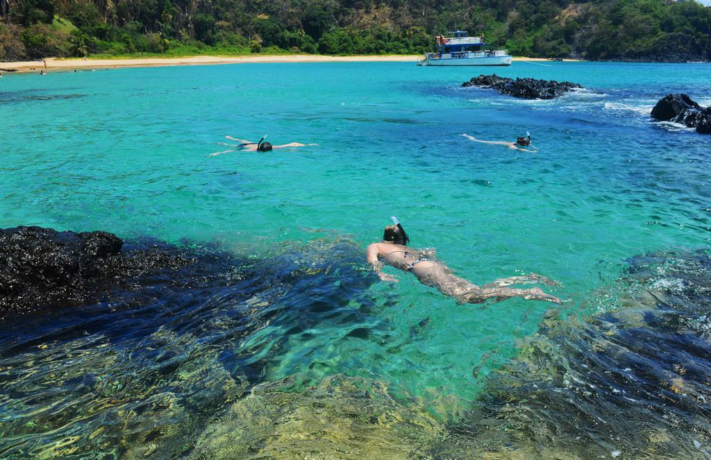
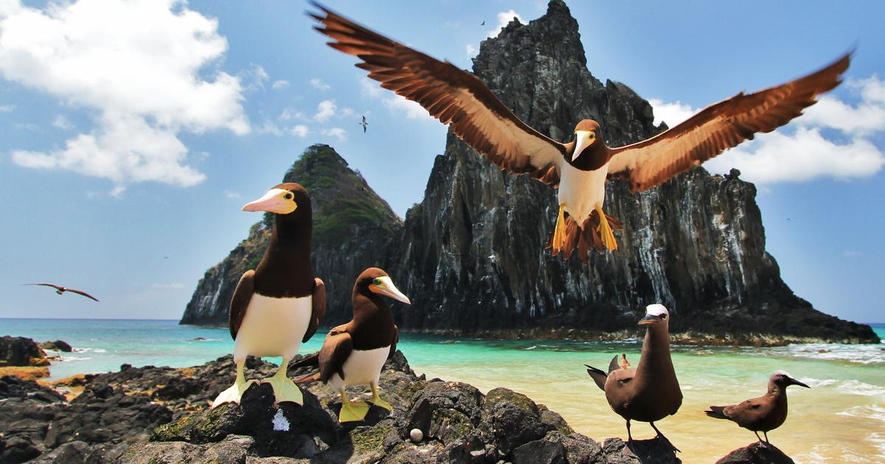

FERNANDO DE NORONHA
|
 |
Chegar a Fernando de Noronha requer um pouco de planejamento. O arquipélago possui um aeroporto que recebe voos diários das cidades de Recife (PE) e Natal (RN). As companhias aéreas Gol e Azul operam rotas regulares. |
|
Importante saber antes de viajar: Taxa de Preservação Ambiental (TPA): cobrada por dia de permanência e deve ser paga antecipadamente ou na chegada. Essa taxa é usada para financiar ações de preservação ambiental. Ingresso do Parque Nacional Marinho: obrigatório para acessar várias atrações naturais. Pode ser adquirido online ou em pontos específicos da ilha. Além disso, o número de visitantes é limitado por lei, para reduzir o impacto ambiental. Por isso, recomenda-se reservar com antecedência, especialmente na alta temporada (dezembro a março e julho). |
 |